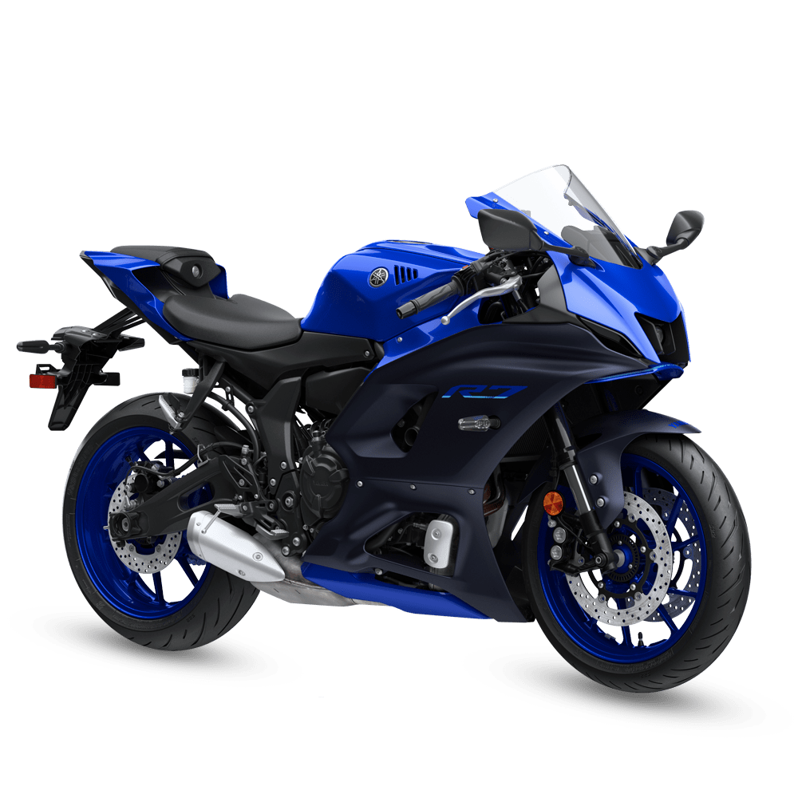

YAMAHA2022 YZF-R7
S/66,949.40
Una superdeportiva de nueva generación con el estilo legendario de Yamaha que combina un avanzado motor CP2 con un chasis ultradelgado y ligero para proporcionar un rendimiento de torque tanto en la pista como en la calle. La nueva YZF - R7 está destinada a aquellos que buscan un diseño puramente Supersport con un excitante rendimiento para su día a día.
leer mas
YAMAHA2022 YZF-R3 ABS
S/31,221.40
La nueva e increíble YZF-R3 te hará llevar el ADN Racing por todas partes. Esta imponente moto deportiva de 320cc full estética, tecnología y avanzado rendimiento te brinda las mejores respuestas en las situaciones más exigentes del día a día.
Diseño inspirado en la YZR-M1 de Moto GP, 8 KM/H más rápido que el modelo anterior.
leer mas

YAMAHA 2022 YZF-R15 VER.3.0
S/ 18,996 *
La R15 es una moto imparable. Desde su primer lanzamiento en el 2008, esta deportiva no ha dejado de evolucionar, sumando mejoras en cada una de sus versiones. Es así que para esta nueva entrega contamos con un motor de 155 centímetros cúbicos, 19.3 caballos de fuerza y un panel 100% digital con nuevas características.
leer mas

YAMAHA2022 YZF-R1
S/103,489.40
Una Súper Deportiva inspirada en la tecnología y cualidades de la YZR-M1, motocicleta que brilla en el MotoGP. Todo el poder de esta máquina es transferida a la destreza y habilidad que muestran los pilotos que la prueban.
leer mas